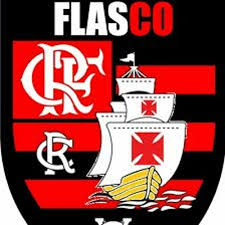

O que é a União Flasco?
A União Flasco é uma iniciativa que visa unir forças, talentos e recursos para criar um impacto positivo e sustentável no mundo. Acreditamos que, ao unir diferentes perspectivas, habilidades e conhecimentos, podemos alcançar grandes objetivos e resolver problemas complexos.
Nosso Propósito
Nosso objetivo é promover a colaboração entre indivíduos, grupos e organizações para melhorar a qualidade de vida das pessoas. Acreditamos que juntos podemos transformar desafios em oportunidades, criando um futuro mais justo e inovador para todos.
Como Funciona?
- Conexão de Pessoas: Facilitamos a conexão de pessoas com interesses e habilidades complementares.
- Projetos Colaborativos: Desenvolvemos projetos que trazem soluções práticas para problemas reais.
- Impacto Positivo: Buscamos gerar mudanças positivas e duradouras nas comunidades e no meio ambiente.
Nossos Valores
- Colaboração: Acreditamos que o trabalho em equipe é a chave para o sucesso.
- Inovação: Buscamos soluções criativas e eficientes para resolver problemas.
- Sustentabilidade: Valorizamos a criação de soluções que respeitem o meio ambiente e as futuras gerações.
- Inclusão: Trabalhamos para que todas as vozes sejam ouvidas e respeitadas.
Como Participar?
Se você acredita no poder da união e quer fazer parte dessa transformação, entre em contato conosco. Juntos, podemos criar soluções incríveis!
